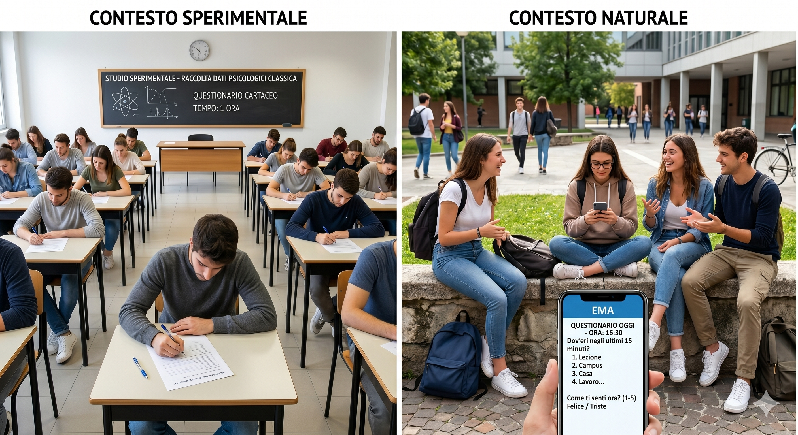
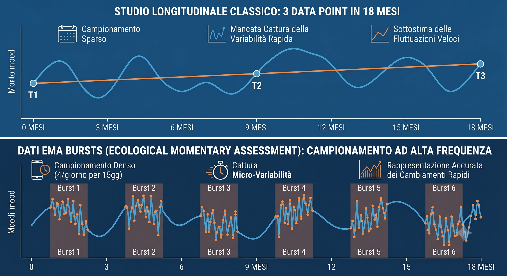
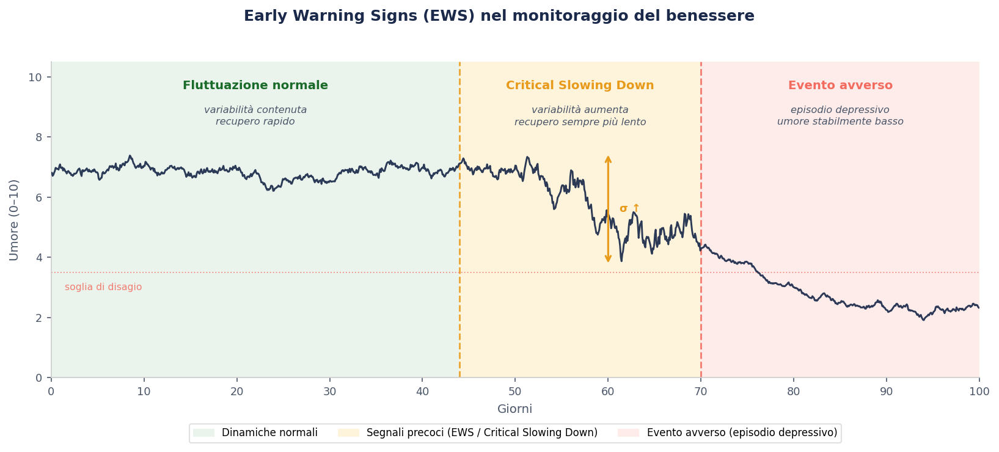
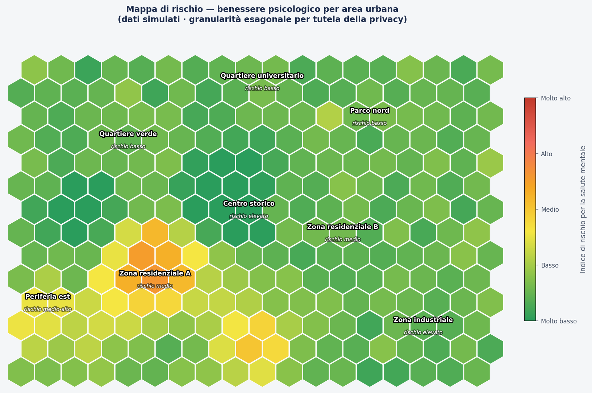

Ecological Momentary Assessment
Ecological Momentary Assessment
Una guida all'EMA per capire come raccogliamo dati direttamente nel contesto di vita degli adolescenti, superando i limiti degli strumenti tradizionali.
A guide to EMA: how we collect data directly in adolescents' real-life context, overcoming the limitations of traditional tools.
01 · Il punto di partenza
01 · Starting point
Gli strumenti più diffusi per valutare il benessere psicologico degli studenti sono tre, ciascuno con punti di forza e limiti importanti.
The most common tools for assessing students' psychological well-being are three, each with important strengths and limitations.
Fogli con domande standardizzate compilati dallo studente su come si è sentito nelle ultime due settimane. Veloci ed economici, ma soggetti al bias del ricordo.
Standardized question sheets completed by the student about how they felt over the past two weeks. Fast and inexpensive, but subject to recall bias.
Colloqui strutturati con uno psicologo. Molto precisi ma costosi e riservati a contesti specialistici. Non scalabili su un'intera popolazione scolastica.
Structured interviews with a psychologist. Very accurate but expensive and reserved for specialist settings. Not scalable across an entire school population.
Genitori e insegnanti descrivono il comportamento dello studente tramite questionari o interviste. Utili ma indiretti: filtrano la percezione di un terzo.
Parents and teachers describe students' behaviour through questionnaires or interviews. Useful but indirect: they filter a third party's perception.
02 · Il problema
02 · The problem
Due problemi fondamentali rendono questi strumenti insufficienti per studiare il benessere degli adolescenti in modo accurato.
Two fundamental problems make these tools insufficient for accurately studying adolescent well-being.
Quando chiediamo «come ti sei sentito nelle ultime due settimane?» stiamo interrogando la memoria, non l'esperienza reale. La memoria è selettiva: ricordiamo i momenti intensi e dimentichiamo tutto ciò che sta nel mezzo. Uno studente può sentirsi bene oggi e rispondere in modo positivo anche dopo una settimana molto difficile.
When we ask "how have you felt in the past two weeks?" we are querying memory, not real experience. Memory is selective: we remember intense moments and forget everything in between. A student may feel well today and respond positively even after a very difficult week.
Una misura ha alta validità ecologica quando viene raccolta nel contesto di vita reale della persona. Un test condotto nello studio di uno psicologo ha bassa validità ecologica: il setting controllato non rispecchia i momenti in cui il disagio emerge davvero — a casa, di sera, dopo una lite con un amico. Questo problema è ancora più critico con gli adolescenti: le emozioni sono molto variabili e uno snapshot in ambiente artificiale cattura solo un frammento di questa realtà.
A measure has high ecological validity when it is collected in the person's real-life context. A test conducted in a psychologist's office has low ecological validity: the controlled setting does not reflect the moments when distress truly emerges — at home, in the evening, after an argument with a friend. This problem is even more critical with adolescents, whose emotions are highly variable.

Contesto sperimentale (questionario in classe) vs contesto naturale (EMA nella vita reale)
Experimental context (classroom questionnaire) vs natural context (EMA in real life)
03 · Una nuova prospettiva
03 · A new perspective
La scelta del metodo di raccolta cambia radicalmente cosa possiamo capire di una persona. Esistono tre livelli di profondità.
The choice of data collection method radically changes what we can understand about a person. There are three levels of depth.
Una fotografia: misuriamo qualcosa in un unico momento. Rapido ed economico, ma non dice nulla su come la persona cambia nel tempo.
A snapshot: we measure something at a single point. Quick and inexpensive, but tells us nothing about how the person changes over time.
Aggiunge il tempo: misuriamo le stesse persone in più occasioni. Possiamo seguire una traiettoria. Limite: tra una misurazione e l'altra può succedere di tutto.
Adds time: we measure the same people on multiple occasions and can follow a trajectory. Limitation: anything can happen between one measurement and the next.
Molte misure ravvicinate nell'arco di giorni o settimane. Permette di cogliere non solo la traiettoria ma la variabilità giorno per giorno — quanto oscilla l'umore, quanto è instabile il benessere.
Many closely-spaced measurements over days or weeks. Captures not only the trajectory but day-to-day variability — how much mood fluctuates, how unstable well-being is.

Studio longitudinale classico (3 data point in 18 mesi) vs disegno EMA-Burst ad alta frequenza
Classic longitudinal study (3 data points in 18 months) vs high-frequency EMA-Burst design
04 · Applicazioni
04 · Applications
I dati EMA aprono possibilità analitiche che i metodi tradizionali non consentono.
EMA data opens analytical possibilities that traditional methods do not allow.
L'alta variabilità emotiva può precedere l'insorgenza di episodi depressivi o ansiosi. I dati EMA permettono di identificare segnali precoci — il cosiddetto critical slowing down — che indicano che qualcosa sta cambiando prima che il problema diventi clinicamente evidente. Monitorare la variabilità, anziché solo il livello medio del benessere, permette di intervenire prima e in modo più mirato.
High emotional variability can precede the onset of depressive or anxiety episodes. EMA data allows us to identify early warning signs — so-called critical slowing down — indicating something is changing before the problem becomes clinically evident. Monitoring variability, rather than just the average level of well-being, enables earlier and more targeted intervention.

I dati EMA permettono di collegare ogni rilevazione al luogo in cui si trovava lo studente, costruendo mappe di rischio spaziali. Diversi quartieri presentano profili ambientali distinti — densità di traffico, verde urbano, servizi sociali — che influenzano il benessere psicologico. Questi dati sono utili per interventi di urbanistica e politiche di salute mentale.
EMA data allows each measurement to be linked to the student's location, building spatial risk maps. Different neighbourhoods show distinct environmental profiles — traffic density, urban green space, social services — that influence psychological well-being. This data informs urban planning and mental health policy.

05 · Lo strumento
05 · The tool
EMA sta per Ecological Momentary Assessment — il principale metodo di raccolta di dati longitudinali intensivi. Si basa su un'app che invia notifiche in momenti prestabiliti, aprendo brevissimi questionari (90–120 secondi per sessione).
EMA stands for Ecological Momentary Assessment — the leading method for collecting intensive longitudinal data. It relies on an app that sends notifications at set moments, opening very short questionnaires (90–120 seconds per session).
I ricercatori presentano il progetto. Raccolta del consenso scritto di genitori e studenti.
Researchers present the project. Written consent collected from parents and students.
Lo studente installa l'app EMA in un breve incontro fuori dall'orario scolastico.
The student installs the EMA app in a brief session outside school hours.
Ogni ~3 mesi: fino a 4 notifiche/giorno esclusivamente fuori dall'orario scolastico. Lo smartphone rimane spento durante le lezioni.
Every ~3 months: up to 4 notifications/day exclusively outside school hours. The smartphone stays off during lessons.
L'app viene disinstallata. Lo studente riceve un breve resoconto collettivo dei risultati.
The app is uninstalled. The student receives a brief collective summary of the results.

Notifica
Notification

Stato d'animo
Mood

Contesto
Context

Feedback
Feedback
06 · Il confronto
06 · The comparison
| Metodo tradizionale | Traditional method | EMA-Burst | |||
|---|---|---|---|---|---|
| Contesto | Context | Setting controllato | Controlled setting | Vita reale | Real life |
| Frequenza | Frequency | 1–3 misure in tutto lo studio | 1–3 measures across the entire study | 4/giorno × 15 gg × 6 burst | |
| Bias di memoria | Memory bias | Elevato (retrospettivo) | High (retrospective) | Nullo (momento presente) | None (present moment) |
| Variabilità | Variability | Non rilevabile | Not detectable | Misurata con precisione | Measured with precision |
| Carico studente | Student burden | Basso (una sola volta) | Low (one time only) | Moderato (solo nei burst) | Moderate (only during bursts) |
| Ricchezza dati | Data richness | Limitata | Limited | Altissima | Very high |
07 · Flessibilità
07 · Flexibility
L'EMA è flessibile: i parametri vengono definiti nella fase di co-progettazione con gli studenti e adattati alle esigenze di ogni scuola.
EMA is flexible: parameters are defined during co-design with students and adapted to each school's needs.
08 · Trasparenza
08 · Transparency
Vogliamo essere completamente trasparenti sui limiti di questo progetto e su come intendiamo affrontarli.
We want to be fully transparent about this project's limitations and how we intend to address them.
Massimo 7 domande per sessione (~90 sec). Gli studenti possono saltare senza conseguenze. Monitoriamo la compliance e interveniamo se cala.
Maximum 7 questions per session (~90 sec). Students can skip without consequences. We monitor compliance and intervene if it drops.
Tutti i dati sono anonimi e cifrati. Server sicuri, conformità GDPR. Nessun insegnante o genitore avrà accesso alle risposte individuali.
All data is anonymous and encrypted. Secure servers, GDPR compliant. No teacher or parent will have access to individual responses.
I dati sono rigorosamente anonimi: il team non può risalire al singolo. Al termine di ogni sessione l'app mostra le risorse di supporto: Telefono Amico (02 2327 2327), consultorio, medico di base, centro di salute mentale.
Data is strictly anonymous: the team cannot identify individuals. At the end of each session the app displays support resources: helplines, local clinic, GP, mental health centre.
Determinanti socio-ecologici
Socio-ecological determinants
I dati EMA individuali vengono integrati con variabili secondarie di contesto per studiare come l'ambiente urbano influenza la salute mentale.
Individual EMA data are integrated with secondary context variables to study how the urban environment influences mental health.
Parchi, aree verdi, NDVI per zona di residenza.
Parks, green areas, NDVI by residential zone.
Qualità dell'aria, rumore, inquinamento luminoso.
Air quality, noise, light pollution.
Caratteristiche del quartiere e dell'ambiente costruito.
Neighbourhood and built environment characteristics.
Indici di reddito, disoccupazione e povertà per area.
Income, unemployment, and poverty indices by area.
Senso di comunità, reti sociali, fiducia interpersonale.
Sense of community, social networks, interpersonal trust.
Temperatura, umidità, eventi climatici estremi.
Temperature, humidity, extreme weather events.
Il documento illustra il metodo EMA, il disegno dello studio e cosa chiediamo alle scuole partecipanti.
The document illustrates the EMA method, study design, and what we ask of participating schools.